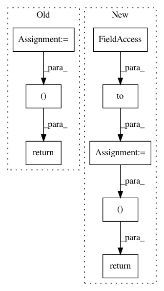

ee19c97fefd74ce588428a96e157bb826c0a450c,hypergan/samplers/aligned_sampler.py,AlignedSampler,_sample,#AlignedSampler#,18
Before Change
def _sample(self):
self.inputs = self.gan.inputs.next(0).clone().detach()
self.gan.latent.z = self.z
g = self.gan.generator.forward(self.inputs)
return [
("input", self.inputs),
("generator", g)
]
After Change
self.inputs = self.gan.inputs.next(0).clone().detach()
self.gan.latent.z = self.z
b = self.z.shape[0]
y_ = torch.randint(0, len(self.gan.inputs.datasets), (b, )).to(self.z.device)
posy_ = torch.ones_like(y_)
negy_ = torch.zeros_like(y_)
return [
("input", self.inputs),
("g1",self.gan.generator.forward(self.inputs, context={"y": posy_.float().view(b,1)}))
//("g2",self.gan.generator.forward(self.gan.inputs.next(1).clone().detach(), context={"y": negy_.float().view(b,1)}))
]
In pattern: SUPERPATTERN
Frequency: 3
Non-data size: 8
Instances
Project Name: HyperGAN/HyperGAN
Commit Name: ee19c97fefd74ce588428a96e157bb826c0a450c
Time: 2020-12-20
Author: martyn@255bits.com
File Name: hypergan/samplers/aligned_sampler.py
Class Name: AlignedSampler
Method Name: _sample
Project Name: dpressel/mead-baseline
Commit Name: 3218a3987ef9f83d1ad5efd6f96d6f6c741c3cfa
Time: 2019-09-27
Author: dpressel@gmail.com
File Name: python/eight_mile/pytorch/layers.py
Class Name:
Method Name: viterbi
Project Name: dpressel/mead-baseline
Commit Name: 9b72ec0d4963412e9790b06d22f051a9723af33c
Time: 2019-02-24
Author: blester125@users.noreply.github.com
File Name: python/baseline/pytorch/crf.py
Class Name:
Method Name: viterbi